Oceans
Sunday 27 October 2019
@water @FOPG @GEOGRAPHY @YEAR1
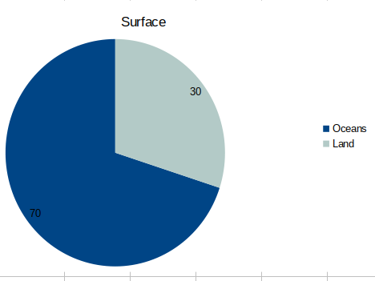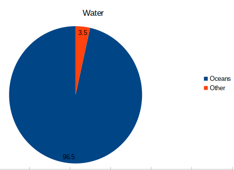
Seawater = 361 million square miles = = 71% of surface
@Ice = 1.6%
Groundwater 5%
Freshwater = 0.04%
Why are the oceans important?
- @Hydroelectric power
- Landforms and processes
- Trade/ shipping
- Somewhere to put plastic
- @Climate regulation (the oceans are a @climate sink and distribute heat through currents and waves)
- Richest and most deverse @ecosystem in the world @systems
- Foodstocks are economically important for coastal communities around the world
- All life originated from the ocean
- Lots of @oxygen is produced by phytoplankton
- @Oceans absorb excess
- We know relatively little about the ocean compared to other environments
- The atmosphere and the ocean are linked by an energy flux. Energy is always bring transferred between them.
Threats
@Pollution → toxic algal blooms
@Plastic
@Overfishing
@human
Continental shelves
@morphology
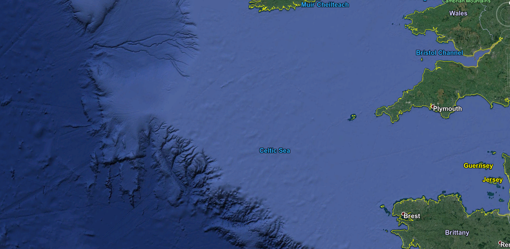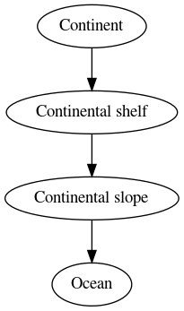
There are incisions on the continental slope: old river valleys from when the @continental_shelf wasn't underwater.
Allow @Turbidity_currents to flow down them → deltic fans
- Continental shelf generally >150m deep
- Most silt and sand from land erosion ends up here
- Shallow + close to shore → dissolved nutrients → feed phytoplankton → lots of fishing
- Exploited for @coal and minerals
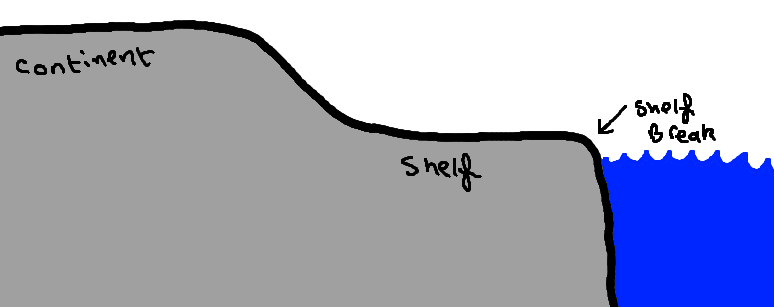
Physical properties
Sea surface salinity (SSS) = 35 parts per thousand
@sea_surface_salinity
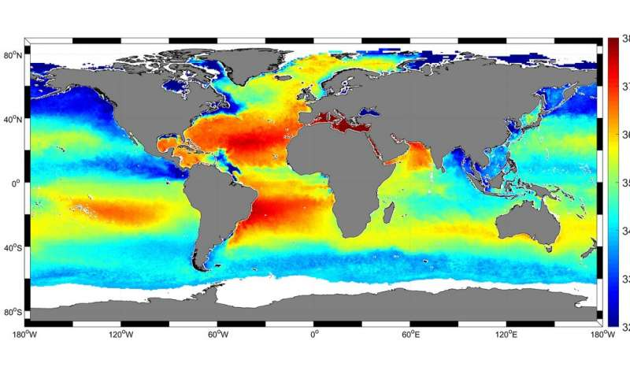
- Dry @deserts latitudes (~20°C are more salty because evapiration > precitipation, leaving behind the @salt)
- Wetter regions (the equator and the tropics) are less salty because @precipitation > @evaporation
- Salts exist in the same ratio everywhere
- Surface water can be diluted when freshwater comes in or concentrated when water evaporates.
- Enclosed basins (Red and Dead seas) have more variation in salinity
Sea surface temperature (SST)
@sea_surface_temperature
 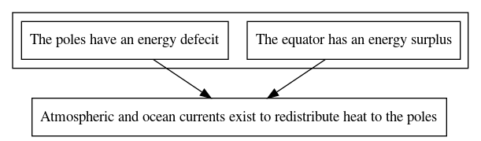
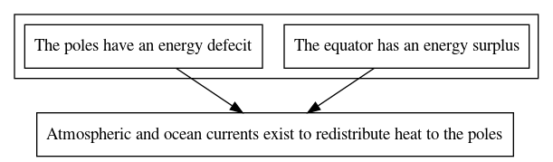
- Hottest at the @equator
- Coldest at the @poles
- Differences due to @radiation imbalance
- @Water has a high heat capacity
- More heat is lost at higher latitudes → lower SST
- Movement of water from high to low latitudes gives energy to cold places and has big impacts on climate
- @El_Niño changes
- 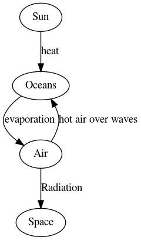
Composition
Composition of salts in seawater
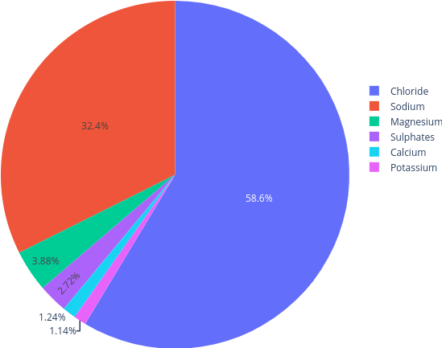
- Salts come from chemical @weathering on land
- Removed by marine creatures for their shells and complex reactions
- @Salt has a budget: balance between salt coming in the salt being deposited
Circulation
@systems
- @Surface_currents (upper 300-400m of water)
- @Deep_currents operate 100-1500m down
- Currents move clockwise in the northen hemisphere
- Currents move anticlockwise in the southern hemisphere
- Surface currents driven by prevailing wind
- Currents are defleced by continents
- 70% of river load that flows into the ocean comes from just 10% of land.
Thermohaline circulation
@thermohaline
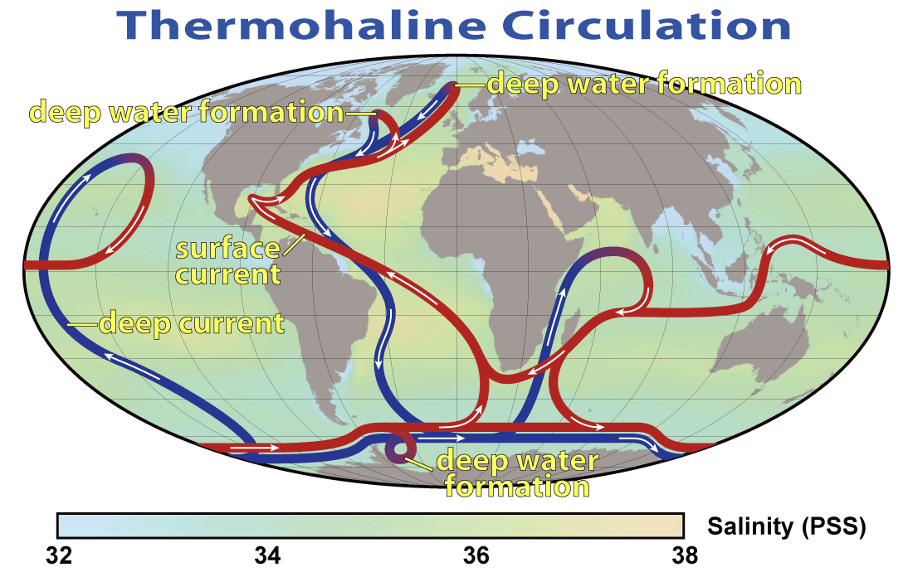
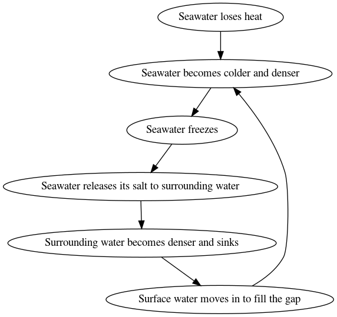
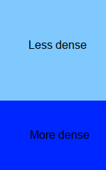This stacking is unstable -> @vertical_mixing -> drives ocean @currents
@Thermocline = heat
@Halocline = @salt
@Pycnocline = density
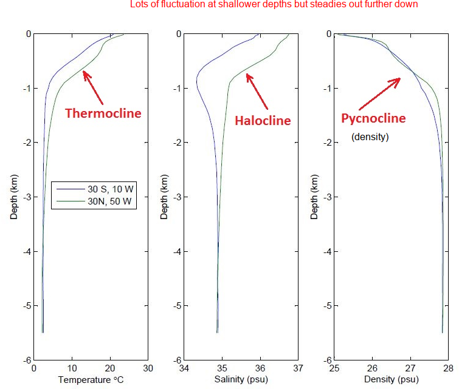
Deep water thermohaline system
This current is very slow
Measured by the global argo network to measure temperature and salinity
Basin Structure
@morphology
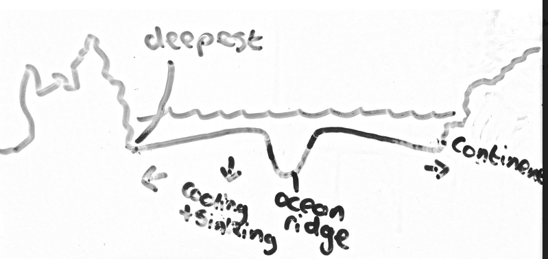
- Oldest part of basin is continental rise
- Crust sinks as it gets further away from the @Mid_Ocean_ridge → ocean volume increaes → ocean gets deeper
- Varying topography: mountains, valleys, canyons, plains, seamounts
- Features tend to be bigger: higher mountains, wider canyons
- net process underwater is sedimentation ≠ erosion on land
Universality
- Salts exist in the same ratio everywhere
Topography
@measuring
The morphology of the sea floor was measured during the cold war
Measured using satelites to measure gravity anomolies
Cold war submarines needed to detect other submarines by their magnetic signature, so they needed to know the background magnetic field first.
This is what they found:
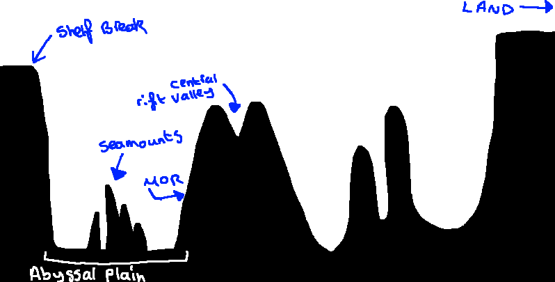